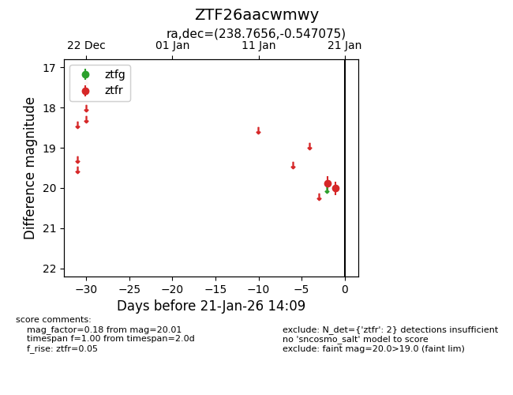
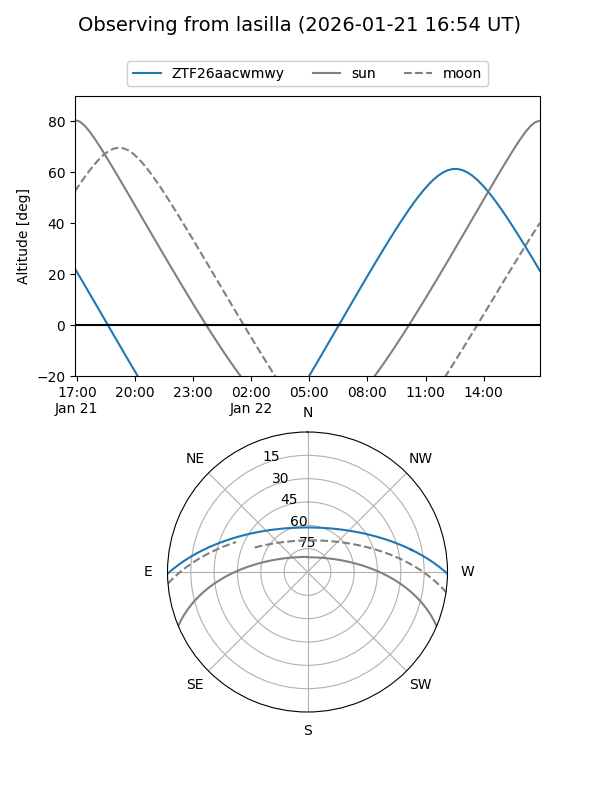
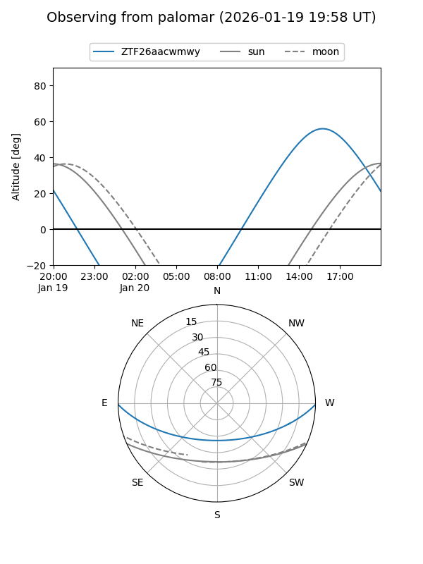

ZTF26aacwmwy
Target ZTF26aacwmwy at 2026-01-19 14:05
Aliases and brokers:
FINK: link
Lasair: link
ALeRCE: link
alt names
ZTF26aacwmwy (ztf,fink_ztf)
Coordinates:
equatorial (ra, dec) = 238.7656,-0.54707
equatorial (HMS+DMS) = 15:55:03.74,-00:32:49.47
galactic (l, b) = (8.5320,+37.94496)
Flags:
Photometry:
last ztfr=19.88
1 ztfr detections
Lightcurve

Visibility


Additional plots